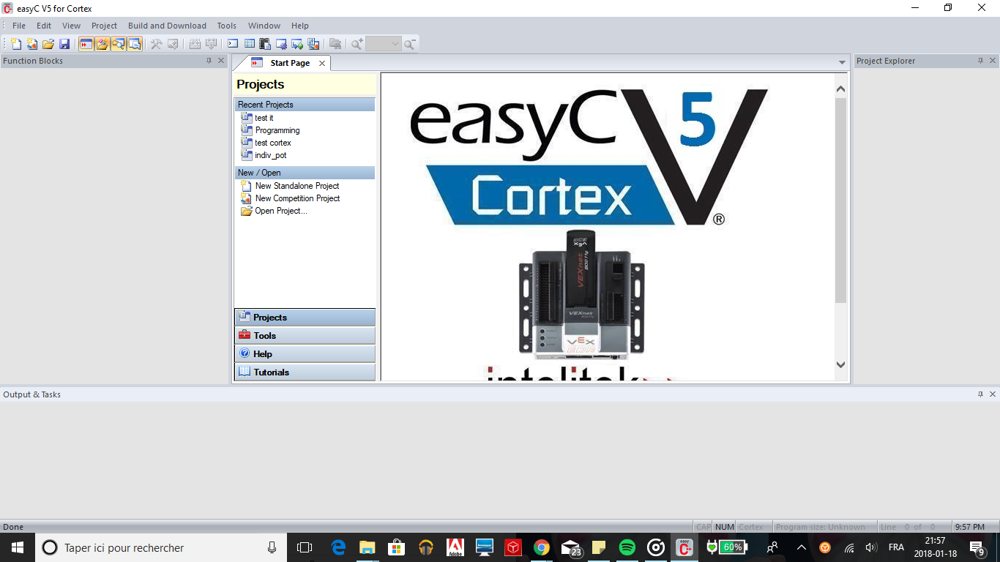
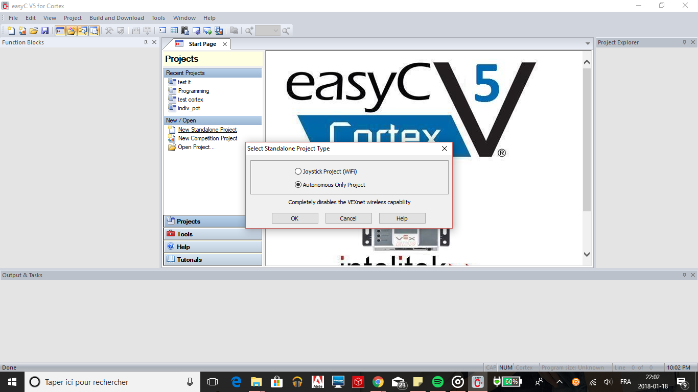
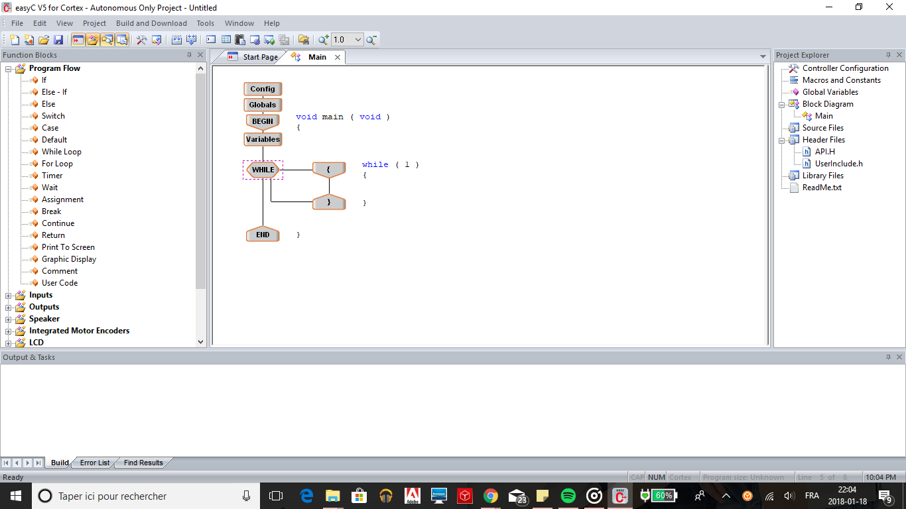
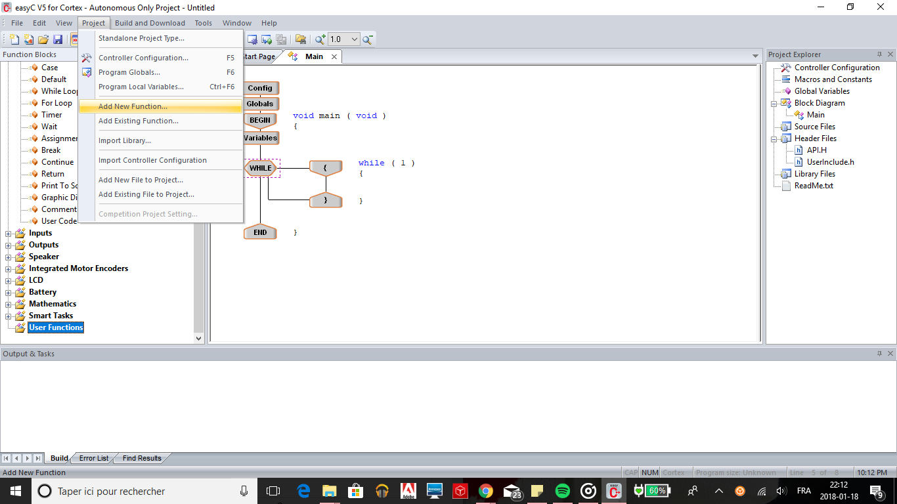
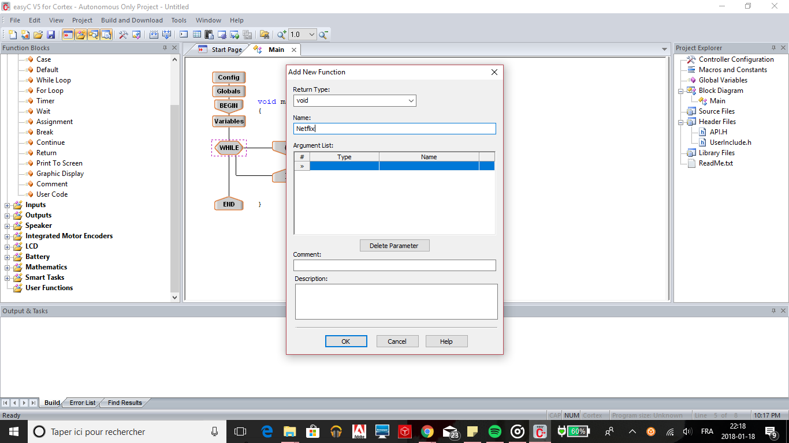
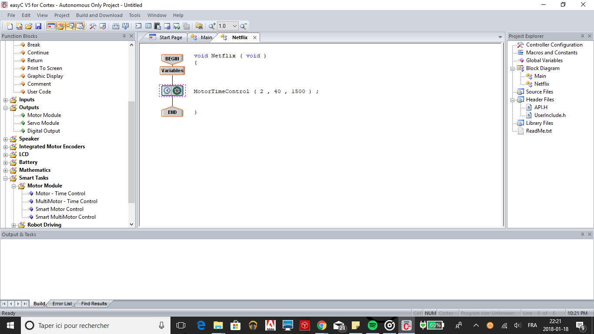
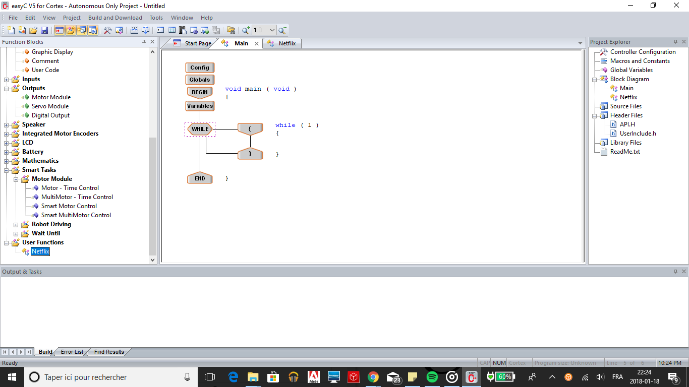
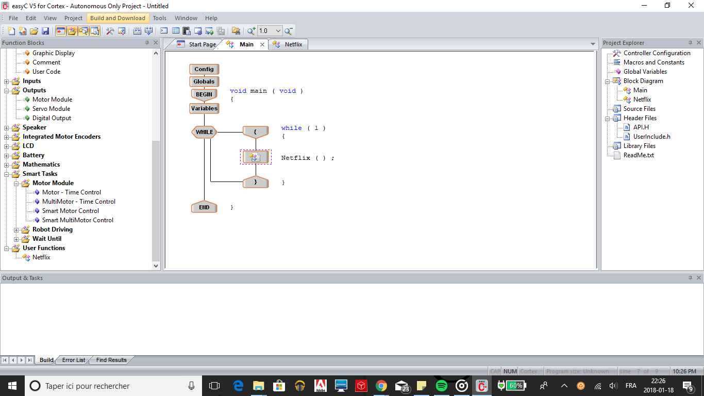

Dans ce tutoriel de programmation, vous apprendrez comment utiliser des fonctions d'utilisateur à l'aide de Easy C, ce qui pourra être utile pour cette compétition
Première étape: Ouvrir Easy C
Deuxième étape: Sélectionner "Nouveau projet indépendant" et choisir l'option de projet autonome.
Troisième étape: Ajoutez une boucle "Tant que" comme vous le feriez avec n'importe quel autre projet.
Maintenant, commençons à utiliser les fonctions d'utilisateur.
Quatrième étape: Ajouter une nouvelle fonction d'utilisateur en allant sur "Projet", puis "Ajouter une nouvelle fonction".
Cinquième étape: Nommez votre fonction (soyez originaux!)
Sixième étape: Écrire l'action que vous souhaitez exécuter
Septième étape: Vous pouvez dorénavant récupérer votre propre fonction d'utilisateur et la déposer dans votre boucle "Tant que"!
Huitième étape: Télécharger votre programme! Seen by Siri Saphir at 10:28pm